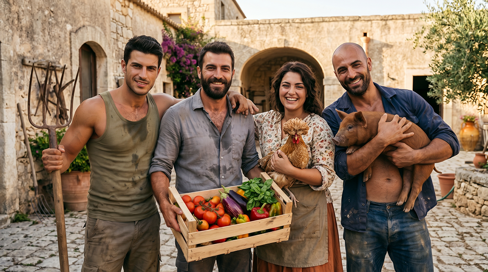
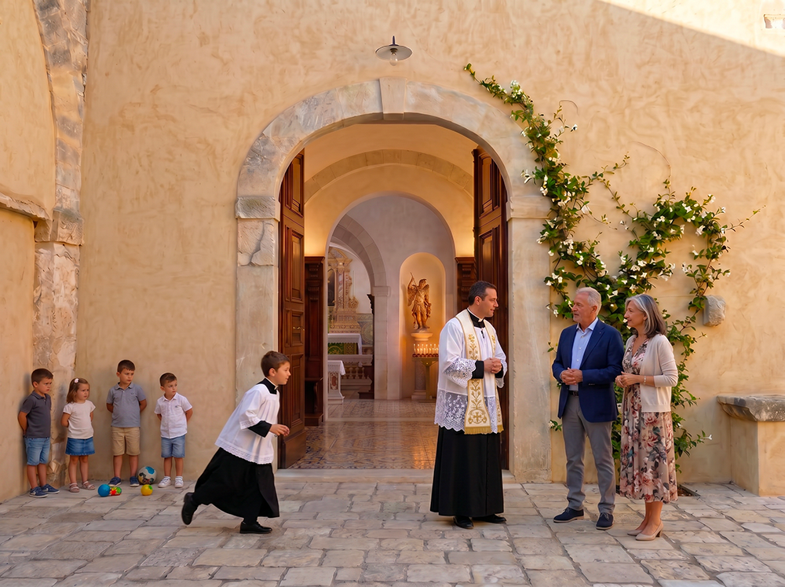
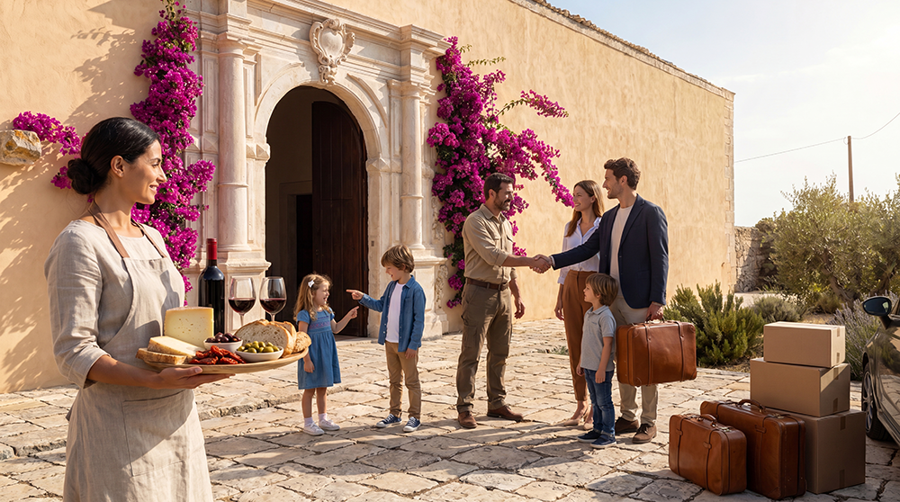

Opportunità di lavoro
Figure professionali richieste
Queste figure sono richieste non come dipendenti, ma come residenti stabili che contribuiscono attivamente alla vita comunitaria, alla rigenerazione del patrimonio e all’autosufficienza, con disponibilità alla trasmissione intergenerazionale delle competenze. Le persone selezionate opereranno come imprenditori all’interno della cooperativa del Baglio San Michele. Questo modello garantisce loro indipendenza economica, attraverso la gestione diretta delle proprie attività (produzione agricola, trasformazione artigianale, servizi o mestieri), unite alla partecipazione ai benefici e alle decisioni della comunità. Il sistema economico è rafforzato dalla tokenizzazione del Borgo, che permette una distribuzione trasparente del valore generato e allinea gli interessi di lungo periodo tra tutti i membri.

1. Produzione primaria agricola e zootecnica
Priorità assoluta – autosufficienza alimentare.
- Agricoltore / contadino biodinamico (4-6 unità full-time). Gestione integrata di colture tradizionali con metodi biodinamici e rigenerativi del suolo.
- Esperto di potature e arboricoltura tradizionale (almeno 2 unità). Cura di ulivi secolari e alberi da frutto secondo tecniche storiche.
- Ortolano e produttore di ortaggi stagionali (2-3 unità). Gestione di orti familiari e collettivi.
- Allevatore specializzato di pollame (1-2 unità).
- Allevatore di capre (almeno 1 unità).
- Allevatore di maiali (almeno 1 unità).
- Pastore / allevatore di piccoli ruminanti (1-2 unità).
- Allevatore di animali da cortile minori (1 unità, integrabile).

2. Trasformazione alimentare artigianale
- Fornaio (1-2 unità con forno a legna tradizionale). Produzione quotidiana di pane, focacce e prodotti da forno con farine locali e lievito madre.
- Macellaio/norcino (1 unità). Macellazione, produzione insaccati e conservazione della carne secondo metodi tradizionali siciliani.
- Casaro (1 unità). Produzione di formaggi e prodotti caseari bovini e ovini secondo metodi tradizionali siciliani.
- Confetturiere (1 unità). Preparazione marmellate, confetture e salse secondo metodi tradizionali siciliani.

3. Artigianato, restauro e manutenzione edilizia
- Muratore/restauratore specializzato in tecniche tradizionali e in lavorazione della pietra iblea- (scalpellini, posatori)
- Falegname/ebanista/ restauratore di mobili e manufatti lignei (1 unità).
- Fabbro e artigiano della lavorazione dei metalli (1 unità).
- Artigiano della lavorazione del gesso e dello stucco (1-2 unità).
- Tipografo e legatore artigiano (1 unità).
- Mosaicista (1 unità).

Altri ruoli richiesti per il buon funzionamento della comunità
Oltre alle attività agricole, zootecniche e artigianali già previste, una masseria autosufficiente e una comunità intenzionale richiedono funzioni essenziali per il buon funzionamento quotidiano, la manutenzione, la coesione sociale, la governance e la sostenibilità a lungo termine.
1. Amministrazione, governance e supporto organizzativo
- Coordinatore amministrativo / contabile
- Segretario del Capitolo dei Savi
- Responsabile della sicurezza e prevenzione rischi

2. Manutenzione e infrastrutture
- Manutentore generale / tuttofare
- Giardiniere / custode del paesaggio
- Responsabile impianti energetici

3. Cura delle persone e servizi sociali
- Infermiere / operatore socio-sanitario
- Educatore / insegnante homeschooling
- Responsabile della cucina collettiva

4. Logistica e supporto operativo
- Magazziniere / responsabile approvvigionamenti
- Addetto alla lavanderia comune

5. Attività culturali, spirituali e formative
- Sacrista
- Bibliotecario / archivista
- Animatore culturale / organizzatore eventi

6. Comunicazione e relazioni esterne
- Responsabile comunicazione e sito web
- Responsabile relazioni istituzionali
Queste figure garantiscono che la masseria non sia solo produttiva, ma anche vivibile, ordinata, sicura e spiritualmente curata. Molte possono essere cumulabili o svolte da residenti con competenze multiple.